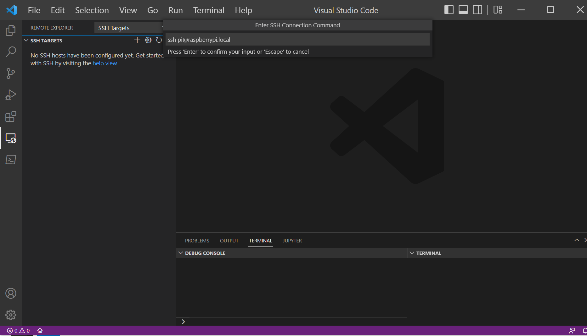

การใช้งาน VS Code IDE แบบ Remote Development#
▷ VS Code#
Visual Studio Code (VS Code) ของบริษัท Microsoft เป็นซอฟต์แวร์ประเภท IDE ซึ่งเป็น Open Source, Cross-platform เหมาะสำหรับนำมาใช้พัฒนาโปรแกรมด้วยภาษาคอมพิวเตอร์ในยุคปัจจุบัน เช่น ภาษา C/C++, C#, Java, Go และ Python เป็นต้น
การติดตั้งและใช้งาน VS Code ก็ทำได้ไม่ยาก และผู้ใช้สามารถเลือกติดตั้งส่วนขยายต่าง ๆ เพิ่มได้ (เรียกว่า VS Code Extensions) เช่น ส่วนขยาย IntelliSense ที่มีความสามารถ หรือ ฟีเจอร์ที่เรียกว่า Syntax Highlighting และ Auto Code Completion ช่วยอำนวยความสะดวกในการเขียนโค้ด การเขียนโค้ดจะทำได้ง่ายขึ้น
บทความนี้แนะนำการใช้งาน VS Code IDE สำหรับระบบปฏิบัติการ Windows แต่สามารถเขียนและคอมไพล์ซอร์สโค้ดบนคอมพิวเตอร์เครื่องอื่นที่ใช้ระบบปฏิบัติการ Linux ที่เข้าถึงได้ผ่านระบบเครือข่าย โดยใช้ SSH (Secure Shell Protocol) หรือจะเป็นเครื่องเสมือนจริงที่ทำงานโดยใช้ Virtual Machine เช่น Oracle VirtualBox VM เป็นต้น
ส่วนขยายที่จะมาแนะนำให้ลองใช้งาน คือ Remote Development Extension Pack ซึ่งประกอบด้วย 3 องค์ประกอบ ดังนี้
- Remote - SSH ทำให้ผู้ใช้สามารถเข้าถึงระบบหรือคอมพิวเตอร์เครื่องอื่นผ่านทาง SSH / OpenSSH
- Remote - Containers รองรับการใช้งานซอฟต์แวร์และเครื่องมือต่าง ๆ ที่ใช้งานภายใต้ Docker Container โดยใช้ร่วมกับซอฟต์แวร์ Docker Desktop
- Remote - WSL รองรับการใช้งาน Windows Subsystem for Linux (WSL2) สำหรับผู้ใช้ Windows 10 / 11
รูป: การเชื่อมต่อระหว่าง Local Host กับ Remote Host ด้วย SSH
เครื่องคอมพิวเตอร์ของผู้ใช้ (เรียกว่า Local Host / OS) จะต้องมีการติดตั้ง VS Code IDE และ Remote Development Extension Pack ไว้แล้ว จากนั้นจึงสามารถเชื่อมต่อไปยังคอมพิวเตอร์ที่ทำหน้าที่เป็น Remote Host /OS เช่น Ubuntu Linux, Raspbian OS (สำหรับบอร์ด Raspberry Pi) หรือ คอมพิวเตอร์เครื่องเดียวกัน ที่ได้ติดตั้งและเปิดใช้งาน WSL2 เป็นต้น
▷ การติดตั้ง VS Code Extensions#
ในบทความนี้ จะใช้ VS Code IDE (ใช้เวอร์ชัน v1.70) สำหรับ Windows ซึ่งผู้ใช้สามารถดาวน์โหลดไฟล์สำหรับการติดตั้งได้จาก code.visualstudio.com มาติดตั้งในคอมพิวเตอร์ของผู้ใช้
จากนั้นเปิดใช้งาน VS Code IDE แล้วไปค้นหา Extensions โดยกดปุ่ม Ctrl + Shift + X
รูป: เปิดใช้งาน VS Code IDE สำหรับ Windows
รูป: ค้นหา Remote Development Extension Pack คลิกเลือกและกดปุ่ม Install เพื่อติดตั้ง Remote Development Extension Pack
เมื่อกด Install แล้ว จะมีการติดตั้งส่วนขยายที่เกี่ยวข้อง ได้แก่ Remote SSH, Remote WSL และ Remote Containers
▷ การเข้าใช้งาน Raspberry Pi จาก VS Code IDE#
ในส่วนนี้เป็นการสาธิต การเข้าใช้ผ่านระบบเครือข่ายไปยังบอร์ด Raspberry Pi ที่ได้ติดตั้ง Raspbian OS (64-bit) มีการเปิด SSH Server / Service ที่พอร์ต 22 เอาไว้แล้ว และอนุญาตให้เข้าใช้งานจากภายนอกได้
ถัดไปเป็นการใช้ Remote - SSH ของ VS Code IDE บนเครื่องคอมพิวเตอร์ของผู้ใช้ (Local OS - Windows) เพื่อเชื่อมต่อและเข้าใช้งานได้เหมือน SSH Client
คลิกเลือกไอคอน Remote Explorer ทางซ้ายมือของ VS Code IDE แล้วเลือก SSH Targets เพื่อเพิ่มรายการ

รูป: เปิดใช้งาน Remote Explorer และเพิ่ม SSH Target
ในตัวอย่างนี้ จะเพิ่มรายการ SSH Target สำหรับการเข้าใช้งานบอร์ด Raspberry Pi
ที่อยู่ในระบบเครือข่ายเดียวกัน โดยสามารถระบุชื่อของเครื่องคอมพิวเตอร์
เช่น raspberrypi.local ในรูปตัวอย่าง พร้อมชื่อผู้ใช้ pi โดยเขียนเป็น ssh pi@raspberrypi.local
แต่ชื่อผู้ใช้แตกต่างไปจากตัวอย่าง หรือต้องการระบุเป็นหมายเลข IP Address ของบอร์ด Raspberry Pi ในระบบ LAN / WiFi ก็จะต้องกำหนดค่าให้ถูกต้อง ก่อนเริ่มต้นการเชื่อมต่อ
VS Code จะต้องเก็บบันทึกการตั้งใช้งาน SSH Target ลงในไฟล์ .ssh/config
โดยทั่วไป ก็จะเก็บไว้ในไดเรกทอรีของผู้ใช้
รูป: แสดงรายการ SSH Target ที่ได้เพิ่มเข้ามาในไฟล์ .ssh/config
จากนั้นให้กดปุ่มเลือก Connect to Host in Current Window
เพื่อเชื่อมต่อกับ SSH Target และจะต้องมีการป้อนรหัสผ่านของผู้ใช้ pi สำหรับ Rasbperry Pi

รูป: เลือก Platform เป็น Linux และจะมีการติดตั้ง VS Code Server ในระบบของ Raspberry Pi โดยอัตโนมัติ
เมื่อเชื่อมต่อได้สำเร็จแล้ว จะปรากฎหน้าต่างในลักษณะต่อไปนี้

รูป: แสดงการทำคำสั่งใน Bash Shell Terminal ของ Raspberry Pi
เมื่อถึงขั้นตอนนี้แล้ว ผู้ใช้สามารถทำคำสั่งต่าง ๆ ใน Bash Shell ของ Raspberry Pi
เช่น การสร้างไดเรกทอรีใหม่ภายใต้ไดเรกทอรีของผู้ใช้ $HOME หรือ ~/
เช่น ~/Demo ในตัวอย่างนี้ โดยใช้คำสั่งใน Terminal
$ make -p ~/Demo
ขั้นตอนถัดไป ให้กดปุ่ม Ctrl+Shift+X ค้นหาและติดตั้งส่วนขยายที่มีชื่อว่า C/C++ Extension ไปยัง Remote Host / OS
รูป: การติดตั้ง C/C++ Extension
นอกจากนั้นแล้ว จะต้องมีการติดตั้ง GCC C/C++ Toolchain และ GNU Debugger (GDB) ไว้สำหรับ Raspberry Pi ด้วย โดยทำคำสั่งใน Terminal ดังนี้
$ sudo apt install -y build-essential gdb
ถัดไป ให้กดปุ่ม Connected to Remote > Open Folder
เลือกเปิดไดเรกทอรีที่ได้สร้างเอาไว้แล้ว ซึ่งเป็นการเริ่มต้นโปรเจกต์ใหม่ ให้สร้างไฟล์ main.c เป็นส่วนหนึ่งของโปรเจกต์
ตัวอย่างโค้ดสำหรับไฟล์ main.c ในไดเรกทอรีของโปรเจกต์ (~/Demo)
#include <stdio.h>
int main( void ) {
printf( "Hello World on Raspberry Pi!\n" );
return 0;
}
รูป: ขั้นตอน Open Folder และการสร้างไฟล์ main.c สำหรับเขียนโค้ดภาษา C
ถัดไป ให้กดปุ่ม Run and Debug และผู้ใช้จะต้องตั้งค่าการใช้งานสำหรับคอมไพเลอร์ เช่น เลือกใช้ gcc
ที่ได้ติดตั้งไว้แล้วในระบบ
รูป: การตั้งค่าการใช้งานสำหรับคอมไพเลอร์ เช่น เลือกใช้ gccที่ได้ติดตั้งไว้แล้วในระบบ
ขั้นตอนสุดท้ายเป็นการลองรันหรือดีบักโปรแกรมที่ได้จากการคอมไพล์โค้ด main.c
ผู้ใช้สามารถคลิกเลือกหมายเลขบรรทัดของซอร์สโค้ด เพื่อใช้เป็นตำแหน่งหยุดชั่วคราวได้ (เรียกว่า Breakpoints)
เมื่อทำขั้นตอนดีบัก (Debug)
รูป: การทำขั้นตอน Run หรือ Debug
▷ การใช้งาน SSH ด้วยวิธี Public Key Authentication#
โดยปรกติแล้ว การเปิดใช้งาน SSH ไปยังคอมพิวเตอร์ที่ทำหน้าที่เป็น SSH Server จะต้องมีการป้อนรหัสของผู้ใช้สำหรับเครื่องดังกล่าว แต่มีอีกวิธีที่ไม่ต้องป้อนรหัสผ่าน แต่ใช้วิธีที่เรียกว่า SSH Public Key Authentication
ในกรณีนี้ ผู้ใช้จะต้องสร้างไฟล์ที่เป็นคู่กัน เรียกว่า RSA Public-Private Key Pair (4096-bit)
และสามารถทำได้ โดยทำคำสั่ง ssh-keygen ใน Windows PowerShell
ssh-keygen -t rsa -b 4096
รูป: ทำคำสั่ง ssh-keygen ใน PowerShell เพื่อสร้างไฟล์ SSH Public-Private Key Pair
โดยทั่วไปแล้ว คำสั่งดังกล่าวจะสร้างไฟล์ในไดเรกทอรีของผู้ใช้ ได้แก่
~/.ssh/id_rsa (Private key file) ซึ่งจะต้องเก็บรักษาไว้เป็นความลับ และไฟล์
~/.ssh/id_rsa.pub (Public key file) ที่จะนำไปใช้งานสาธารณะ
เมื่อสร้างไฟล์ได้แล้ว ให้นำข้อความที่มีอยู่ในไฟล์ ~/.ssh/id_rsa.pub (Windows)
ไปใส่ต่อท้ายในไฟล์ ~/.ssh/authorized_keys(Raspbian OS)
ให้ตรวจสอบดูว่า มีไฟล์ ~/.ssh/authorized_keys สำหรับไดเรกทอรีของผู้ใช้
ในระบบ Raspbian OS / Raspberry Pi แล้วหรือไม่
ถ้ายังไม่มี ให้ทำคำสั่งต่อไปนี้ใน Bash Shell
$ mkdir -p ~/.ssh && touch ~/.ssh/authorized_keys
ขั้นตอนถัดไป เป็นการนำข้อมูลใน SSH Public Key บนเครื่องผู้ใช้
Windows ไปใส่ต่อท้ายในไฟล์ ~/.ssh/authorized_keys ในไดเรกทอรีของผู้ใช้
pi สำหรับ Raspbian OS โดยทำคำสั่งใน Windows Powershell
ดังนี้
type "$env:USERPROFILE\.ssh\id_rsa.pub" |
ssh "pi@raspberrypi.local" "cat >> ~/.ssh/authorized_keys"
เมื่อทำคำสั่งสำเร็จแล้ว ให้ลองเข้าใช้งาน Raspberry Pi ด้วย ssh
ssh "pi@raspberrypi.local"

รูป: ตัวอย่างการทำคำสั่งใน PowerShell
▷ กล่าวสรุป#
บทความนี้ได้นำเสนอขั้นตอนการใช้งาน VS Code IDE ร่วมกับ Remote Development Extension - SSH ในการเชื่อมต่อจากคอมพิวเตอร์ของผู้ใช้ที่เป็นระบบปฏิบัติการ Windows ไปยังระบบปฏิบัติการ Linux / Raspbian OS (64-bit version) ที่ทำงานงานด้วยบอร์ด Raspberry Pi
This work is licensed under a Creative Commons Attribution-ShareAlike 4.0 International License.
Created: 2022-09-01 | Last Updated: 2022-09-01